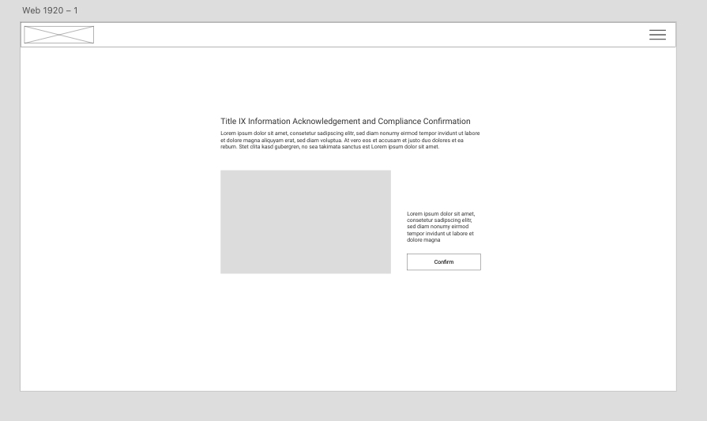

CASE STUDY
Title IX

Project Overview
The Video Confirmation System is a web-based platform designed to ensure compliance with mandatory video training requirements. The system allows users—such as students or student workers—to access a designated training video and confirm completion upon viewing.
Once a user watches the video, they must manually confirm their completion, which is then logged in a database for tracking purposes. The platform is designed for annual compliance, ensuring that users revisit and confirm their training once per year. Unlike interactive learning systems, this tool does not require quiz questions or in-video prompts, focusing solely on streamlined confirmation tracking.
As the Lead Developer, I was responsible for both frontend and backend development, implementing a seamless user interface, video playback system, and backend data logging. Additionally, I mentored a student throughout the project, guiding them through competitive auditing practices to assess existing solutions and identify key improvements
| Tech Stack | .NET Core, SQL Server, JavaScript, Bootstrap |
|---|---|
| Project Type | Full-stack web app |
| Role | Lead Developer, UX Designer, Mentor |
| Completion Date | Jun 2024 |

Key Features
- Seamless Video Playback: Users can access and watch a designated training video with minimal distractions.
- One-Click Confirmation: After watching, users confirm completion with a single action, ensuring a streamlined experience.
- Automated Compliance Tracking: Completion confirmations are securely logged in a database for annual verification.
- Annual Verification Requirement: Users must revisit and complete training once per year, ensuring compliance.
- Secure Data Logging: Backend system records completion data, enabling reporting and audits.
- User-Friendly & Minimalist UI: Designed for efficiency, allowing users to complete training with minimal steps.
- Mentorship & Competitive Analysis: Guided a student through a competitive audit to evaluate similar systems and refine the solution.
Information gathered by Valeria Garcia
Identifying Key Competitor Features & Gaps
Solution: The audit focused on analyzing **competitor platforms** to identify **strengths, weaknesses, and usability gaps** in existing **video-based learning and compliance tracking solutions**. The insights helped refine the **Video Confirmation System** for enhanced **user experience and compliance efficiency**.
Understanding Competitor Positioning
Solution: Competitors like **Blackboard, Cornerstone, Edpuzzle, and ASCIP-E Learning** each target different audiences. While Blackboard and Cornerstone focus on **corporate and academic learning management**, Edpuzzle and ASCIP specialize in **interactive video training**. This competitive insight guided **the minimalist, compliance-focused approach** of the Video Confirmation System.
Addressing Market Gaps
Solution: Several competitors lacked **key features**, including **video speed controls, multilingual support, and clear onboarding instructions**. The Video Confirmation System improves upon these gaps by ensuring **a simple workflow, compliance tracking, and an accessible UI**.
Enhancing Accessibility & Compliance Tracking
Solution: A significant gap among competitors was the **lack of video speed control and limited accessibility options**. The Video Confirmation System prioritizes **responsive design and WCAG accessibility compliance**, making training more **inclusive and flexible**.
Mentorship & Competitive Audit Process
Solution: As part of this project, I mentored a student in conducting a **competitive audit**, guiding them through **UX research methodologies** and market analysis. This process helped refine the system’s features and provided **valuable experience in evaluating industry standards**.

Project Gallery


Design & Development Insights
Prioritizing Simplicity for Compliance Tracking
Solution: Since the goal was to ensure annual video training compliance, the system was designed with minimal user actions—watching the video and confirming completion. This streamlined approach reduced complexity while maintaining compliance.
Balancing User Experience with Compliance Needs
Solution: Unlike interactive training platforms, this system needed to track completion without disrupting the user experience. The final design eliminates unnecessary prompts while maintaining accurate data logging.
Streamlining Backend Data Management
Solution: To ensure scalability and reliability, I implemented a secure backend that logs each confirmation with a timestamp. This allows administrators to easily track completion rates and verify compliance annually.
Ensuring Accessibility & Responsiveness
Solution: Since students and staff access the system from various devices, the platform was developed with responsive design principles and WCAG accessibility compliance, ensuring usability for all users.
Mentorship & Competitive Audit
Solution: As part of this project, I mentored a student in conducting a competitive audit to evaluate similar compliance tracking solutions. This process helped refine the system’s core functionalities while providing valuable UX research experience.

Lessons Learned & Future Improvements
Refining Full-Stack Development Workflow
Since I was responsible for both frontend and backend development, I improved my ability to integrate UI/UX with backend functionality, ensuring a seamless user experience.
Enhancing Data Logging & Compliance Tracking
This project reinforced the importance of accurate and secure data logging for compliance tracking, ensuring that confirmations were properly stored for annual verification.
Optimizing Minimalist UI for User Efficiency
Building a simple, distraction-free interface emphasized the value of intuitive user interactions, ensuring users could complete the process with minimal steps.
Mentoring & Competitive Analysis Experience
Guiding a student through a competitive audit allowed me to refine my mentorship skills and further understand how industry research shapes product decisions.
Future Improvement: Real-Time Video Completion Tracking
A future enhancement could introduce automated video tracking to ensure that users watch the entire video before confirming completion, improving compliance verification.
EXPLORE MORE
Continue through the portfolio.
Browse the complete project collection, or reach out if you would like to discuss the engineering and design decisions behind this work.